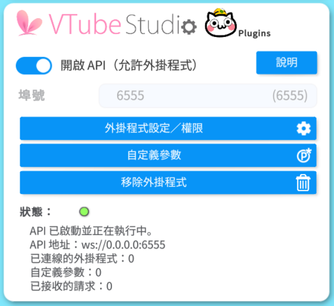
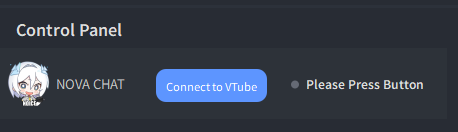
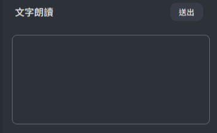
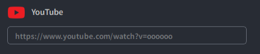

Open the VTube Studio application.
Go to the API settings in VTube Studio, enter the API key 8051, and click the "Confirm API Call" button.

Click the "Settings" button. VTube Studio will prompt you to confirm whether to mount the third-party application. Click confirm.

You can type messages using your keyboard, then press Enter or click the "Send" button to submit.

Connect to YouTube Livestream: Enter the link to the YouTube livestream, and NOVA CHAT will automatically capture the chatroom content.
